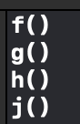

Pay attention to precedence. And associativity can help you to unstand delartion.
int * ptr_arr[10];
Since [] Array subscript is left to right associativity and Group 2 precedence,
Since * indirection operator is right to left associativity and Group 3 precedenc,
The actual statement looks like
int* (ptr_arr[10]);
An array has elements of int* types.
Why Pure Function is Better? - State and I/O file
Pure function should be independent of states. It will always return the same results (deterministic behaviour).
In C++, the order of evaluation is not guranteed.
int f(){
std::cout << "f()" << std::endl;
return i;
}
...
int main(int argc, const char * argv[]) {
std::cout << f() + g() * h() + j() << std::endl ;
return 0;
}

Interesting, right?
Read C++ Primer pp138
Order of operand evaluation has nothing to do with precedence and associativity.
This will mater if multiple operands affect the state of the same object or I/O file.
In this case,
- you need to make sure the operand is pure in the expression.
- If you change the value of an operand, don't use that operand elsewhere in the same expression.
- Change the expression to a statement block and execuate sequentially.